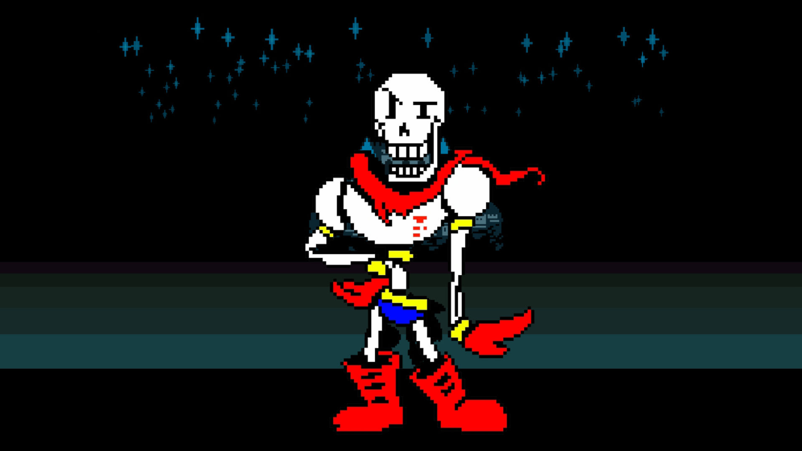
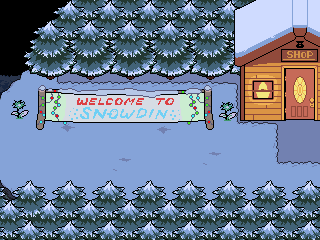

Human
Human
Frisk
Frisk is the human protagonist who falls into the Underground and discovers the world of monsters. Their choices influence the direction of the adventure.
Discover the characters, powerful bosses and mysterious locations that make the Underground such an unforgettable world.
Explore the ArchiveGet to know the monsters and humans who shape the story of Undertale.
Human
Frisk is the human protagonist who falls into the Underground and discovers the world of monsters. Their choices influence the direction of the adventure.
 Skeleton
Skeleton
Sans is a mysterious skeleton who lives in Snowdin with his brother Papyrus. He is known for his jokes, relaxed personality and hidden abilities.

SkeletonPapyrus is an energetic skeleton who dreams of joining the Royal Guard. He enjoys puzzles and wants to become famous.
 Guardian
Guardian
Toriel is the kind guardian of the Ruins who tries to protect Frisk and guide the human through the beginning of the journey.
 Monster
Monster
Temmie is a strange and cheerful monster who lives in Temmie Village. She has a unique way of speaking and loves spending time with other Temmies.
 Warrior
Warrior
Undyne is the captain of the Royal Guard. She is brave, determined and wants to capture the human.
Discover some of the important characters and challenging encounters found throughout the Underground.
 King
King
Asgore is the king of the Underground and the ruler of the monster kingdom. He plays an important role in the story and the fate of the monsters.
Flowey is a mysterious flower who plays an important role in Undertale's story. His friendly appearance hides a complicated personality.
 Robot
Robot
Mettaton is a charismatic robot who loves entertainment and performing. He is famous throughout the Underground for his dramatic shows.
Travel through the different areas of the Underground and discover the places where the story unfolds.
 Ancient Area
Ancient Area
The Ruins are the first major area Frisk explores in the Underground. This ancient place is where the adventure begins.

Snowy RegionSnowdin is a snowy region where Sans and Papyrus live. It is filled with forests, puzzles and memorable characters.
 Volcanic Region
Volcanic Region
Hotland is a hot volcanic region filled with technology, unusual areas and challenging encounters.